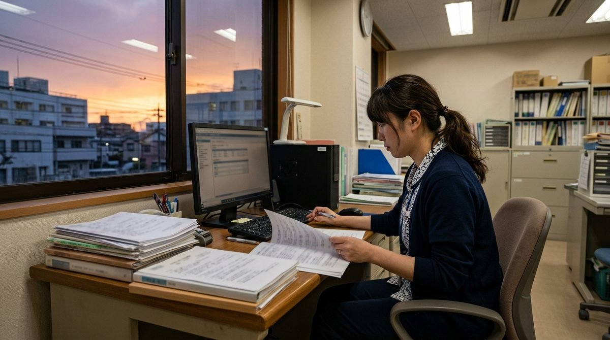
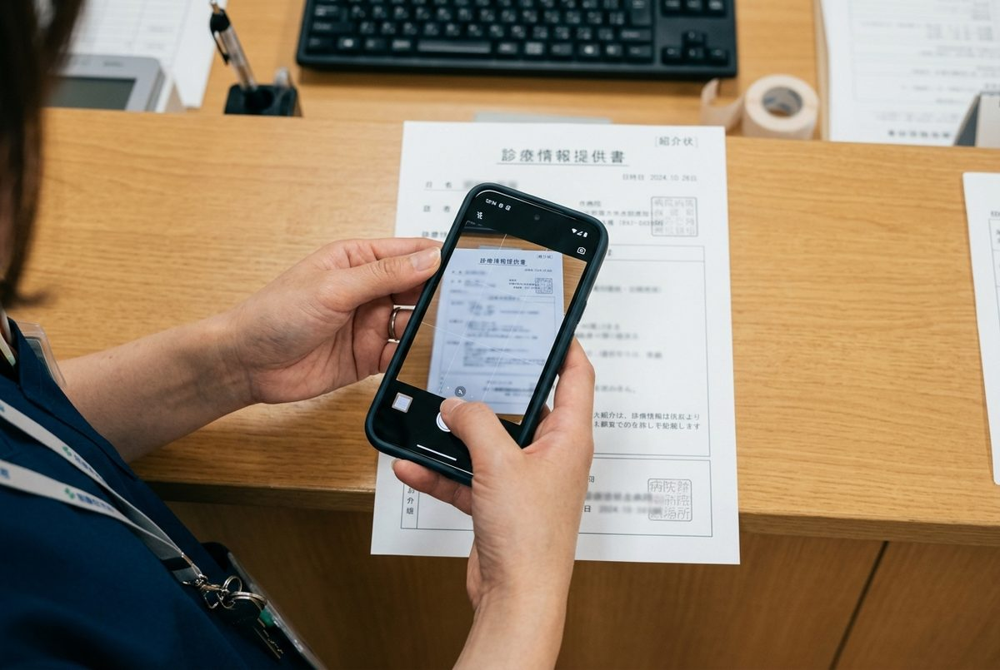
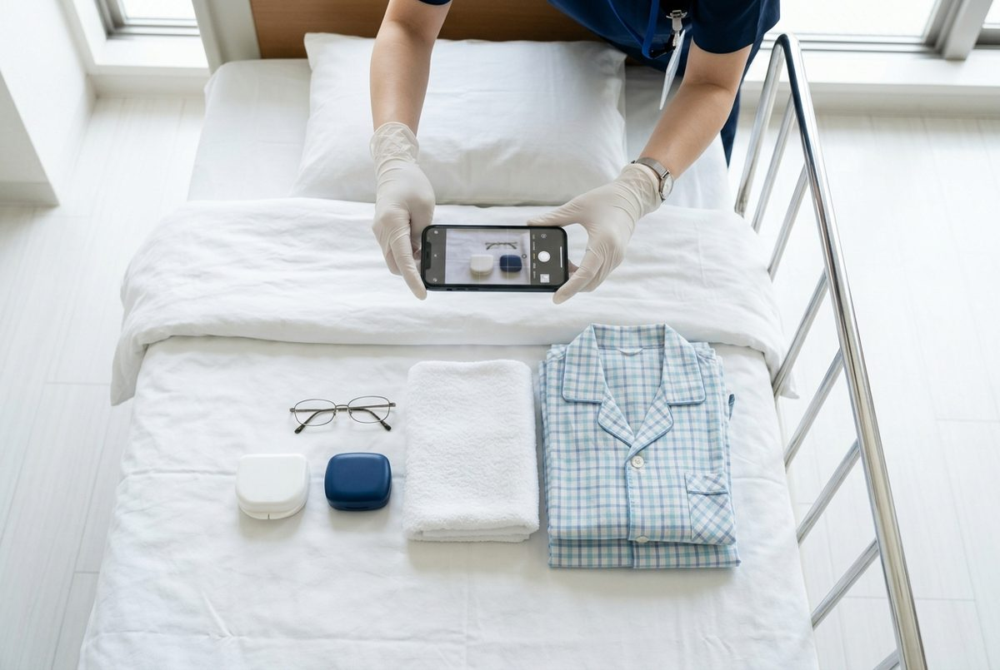

FAXで届いた紹介状、もう写さない。
届いた紹介状・FAXを撮るだけで、送り元・患者さん・用件が一覧（台帳）に。看護サマリ・退院時の情報提供・返書の下書きも、短いメモから数秒で。診断や薬のことは書きません。
電子カルテとはつながず、できた文章を貼るだけで使えます。
見本で紹介状の読み取り・書類の下書き・持ち物チェック・予定の共有を試せます。登録はいらず、入れた内容も写真も保存されません。架空の紹介状で試せます。
複合機から取ってきて、仕分けて、台帳に写す。その「写す」をなくします。
| 紹介先 | 〇〇病院 循環器内科 御中 |
| 患者氏名 | 髙橋 誠 |
| 生年月日 | 1946年11月22日 |
| 紹介元 | 試験町ファミリークリニック |
労作時の息切れが増えています。精査をお願いいたします。
※ 上の紹介状・一覧は架空のものです。実際にてますい 病院版で読み取った結果の形です。
複合機まで取りに行く、仕分ける、書き写す。てますいが減らすのは、この3つ目です。
出典：クラウドFAXの実証の公開資料（2025年9月・1か月あたり）。看護記録をAIなどで手伝う仕組みは、関心がある病院が約50%なのに、入れている病院は5.6%（日本看護協会「2025年 病院看護実態調査」）。入れない理由の1位は初期費用でした。
単語や箇条書きで十分です。薬・検査の値・日付は入れたとおりに残し、入力に無いところは【要確認】と空けます。
📋 看護サマリ
✉️ 返書（受診のご報告）
「🎤 こえメモ」を押して、いつもの申し送りのように話すだけ。外国籍の看護助手さんがベトナム語・インドネシア語・ミャンマー語・タガログ語・ネパール語・英語・中国語などで話しても、自動で聞き分けて、日本語に訳して欄に振り分けます。
たとえば Aさん 夕方から微熱 37.4 水分すすめる。Bさん 明日9時 CT 朝食止め
と話すだけ。
アプリのダウンロードはいりません。お渡しするQRを開くだけで、すぐに使い始められます。
看護サマリ、退院時の情報提供、返書など8種類。紹介状は「撮る」を押すだけ
「Aさん 80代女性」「肺炎で入院」「とろみ付き」など短いメモでOK。実名は入れません
コピーして電子カルテに貼るだけ。貼るときに本当のお名前に置き換えます。「もう少し短く」「作り直す」もボタン1つ
てますいが目指しているのは、終業後に書類とFAXに追われる時間を減らすことです。

※ 写真はイメージです。
8つの書類に対応しています。病院の様式に合わせた調整もご相談ください。
4つの機能を、同じ画面で使えます。月額の中にすべて含まれます。

撮るかPDFを選ぶだけで一覧に。人が確かめてから入れます。一覧は90日で自動的に消え、Excel用に書き出せます（管理者のみ）。
メモから、看護サマリ・情報提供・返書の文章を数秒で清書。診断・薬・検査値は書きません。

義歯・眼鏡・補聴器などを並べて撮ると一覧に。退院のときに撮り直すと、返し忘れが分かります。薬の名前は読みません。
入退院、検査・受診、面会・カンファレンスを、全員の画面でひと目で。予定表を写真・PDFで読み取ることもできます。
患者さんの大切な情報を扱うからこそ、最初から気をつけて作っています。
診断や薬のことを勝手に書かない？
書きません。医学的な診断・判断・治療方針・見通しは書かず、薬の名前・量・検査の値・病名・日付は入れたものだけを書きます。入力に無ければ作らず【要確認】と空けます。最後の確認は、スタッフの皆さまでお願いします。
電子カルテとつながる？
つながりません。病院のパソコンやスマホのブラウザで使い、できた文章はコピーして電子カルテに貼ります。メーカーとの調整やつなぎ込みの費用はいりません。
患者さんの情報はどこに保存される？
名簿・予定・持ち物の一覧・紹介状の一覧は、国内（東京）の専用の場所に保存します。書類の下書きに入れたメモ・音声・紹介状の画像は保存しません。紹介状の一覧は90日で自動的に消えます。AIの学習には使われません。安全管理ガイドラインに沿った説明の書類（開示書・覚書・掲示の見本）は、ご契約時にお渡しします。
ほかの病院から見られる心配は？
病院ごとの専用ページになっていますので、ほかの病院からは見えません。管理者用と職員用の2種類のQRで、できることを分けられます。
まずは1か月、病棟や連携室で使ってみてからご判断ください。
最低契約期間は3か月です（無料体験の1か月は含みません）。4か月目からは1か月ごとの更新で、前月末までにご連絡いただければ翌月末で解約できます。ご説明・導入のお手伝いは、基本はオンラインで全国対応です。訪問をご希望の場合は、交通費（実費）をいただきます。上記は導入価格で、変わることがあります。提供：HiMaWaSa Sync（大阪府）
※ 自動化の特典について
ご契約時に、身近な作業を1つ自動化します（例：毎月の集計表づくり、申し送りの転記、決まった書類の作成）。作業時間は5時間まで、電子カルテなど他社システムとのつなぎ込みは対象外です。詳しい条件はご契約のときにお渡しします。
平日は在宅医療の医療法人で、記録や事務の手作業を減らす仕事（DX推進）をしています。届いたFAXをAIで読む仕組みづくりにも関わっています。土日は小規模多機能の介護現場で介助に入っています。
「電子カルテを入れ替える」のではなく、今のやり方のまま、手元に残る作業を1つずつ軽くする。てますいは、その考えで作っています。